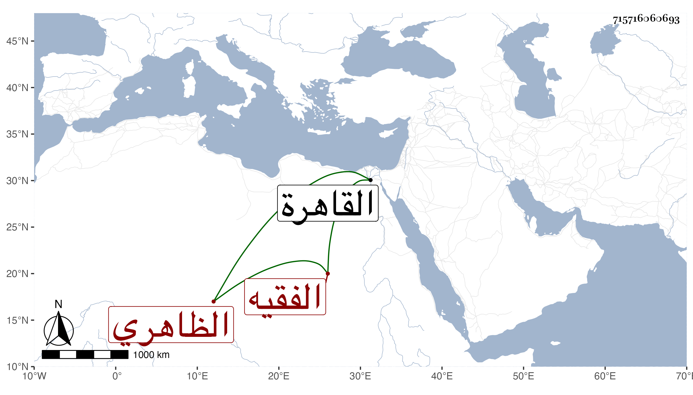

0902Sakhawi.DawLamic.ITO20230111-ara1.EIS1600.715716060693
Biography ID: 715716060693
1072
سودون الظاهري برقوق الفقيه . كان صهر الظاهر ططر وجد ابنه الصالح محمد والد أحد المقدمين البدر حسن وأحد رؤس الفتن في الدولة الناصرية ولذا أبعده المؤيد هذا مع تفقهه واستحضاره وكثرة أبحاثه ومزيد تعصبه للحنفية ولكنه كان قوي النفس شهما ولما تسلطن ططر وقدم القاهرة تلقاه هذا فقام له وأجلسه بجانبه فوق الأمراء ، ولما تسلطن سبطه الصالح رام تقبيل يد جده فمنعه كل ذلك ولم يتأمر البتة . مات بعد ولده المشار إليه في حدود الثلاثين وذكره شيخنا في إنبائه فقال : سودون الفقيه كان كبير الجراكسة تلمذ للشيخ لاجين الجركسي ، وكان أعجوبة في دعوى العلم والمعرفة مع عدمهما ، وكان الكثير منهم يعتقد أنه لا بد أن يلي السلطنة كما كانوا يزعمونه في شيخه واتفق أن زوج ابنته وهو الظاهر ططر ولي السلطنة فارتكب من يتعصب الشطط وقال ظهر المراد في ططر فلم ينشب ططر أن مات ولم يحظ سودون في ولايته بطائل فضلا عما بعدها وكان يكثر سؤال من يجالسه عن الشيء المعضل فإذا أجابه عنه نفر فيه قائلا ليس الأمر كذلك ثم يعيد الجواب بعينه مظهرا أنه غيره ، وله من ذلك عجائب . مات في ثاني عشر صفر سنة ست وعشرين .
